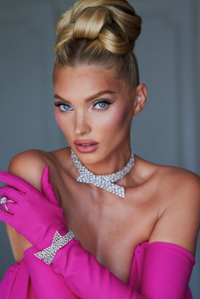
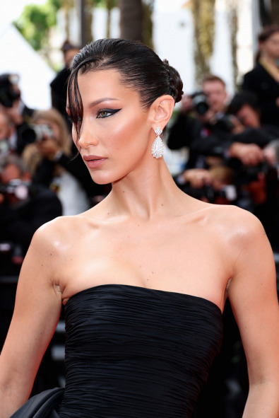
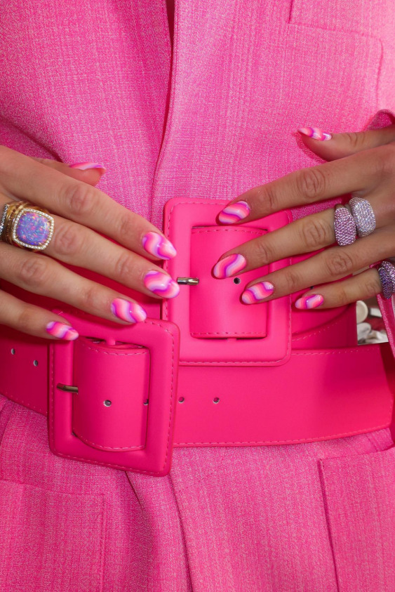

Güzellik
Instagram'da Cannes Film Festivali Güzellik Takibi.

2022 Cannes Film Festivali: Kırmızı Halının Favori Güzellik Portreleri
Bella Hadid'in çekici bakışlarından Elsa Hosk'un dekoratif topuzuna, 10. günündeki Cannes Film Festivali'nin favori saç ve makyajlarını keşfedin.

Nina Sandbech'ten Imaan Hammam'a Haftanın Güzellik Instagram'ları
15/05 - 22/05 haftasının en çok dikkat çeken güzellik Instagram'ları bir arada.